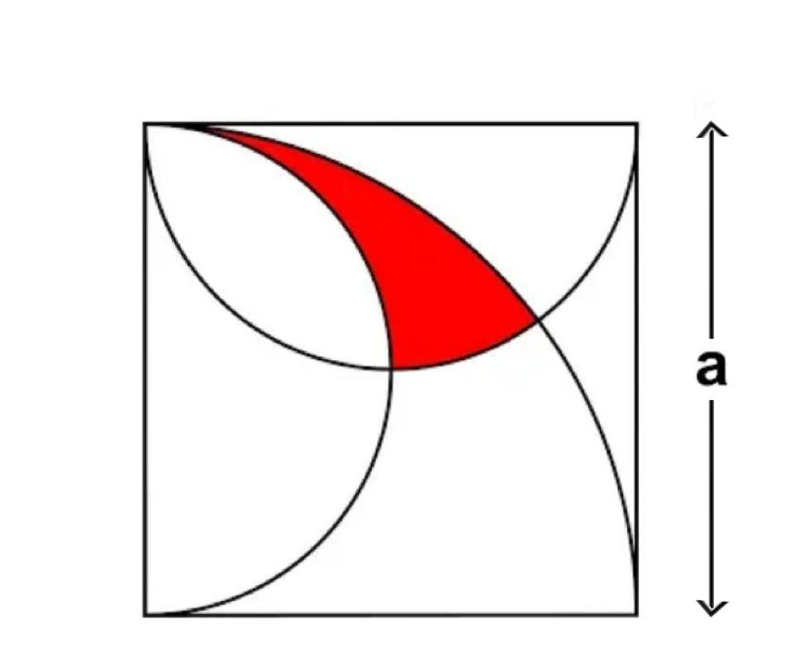
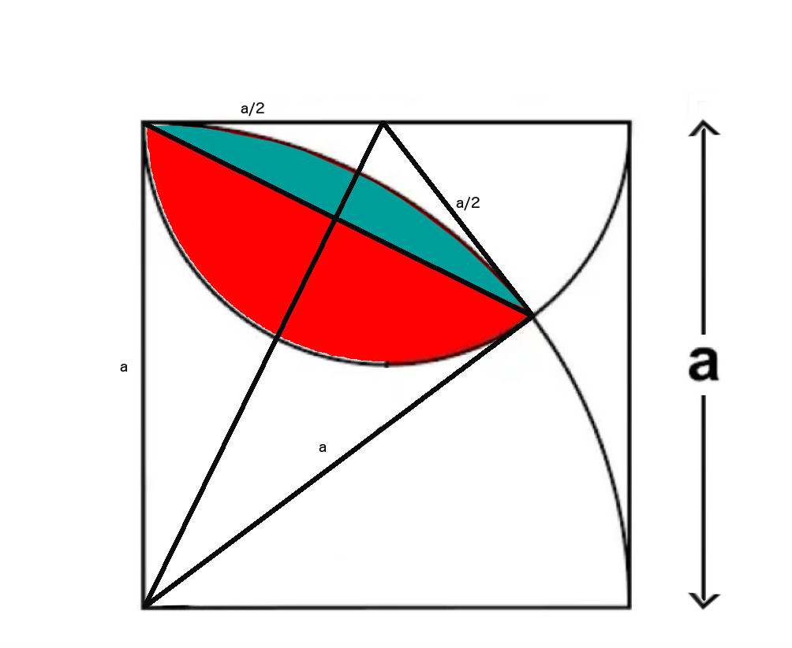

I have came across this mathematical problem a few days back on youtube, and decided to find a solution my own way. The fundamental concept of my solution is to find the area of the following shaded area first,
I call the above shape a Lens for simplicity. and then subtract the area of the shaded region below, which I call a Leaf.
So, our final area that we want to find out is
$$
\begin{align}
\mathcal A_{Final}&=A_{Lens}-A_{Leaf}\tag1
\end{align}
$$
To start with, lets find out the area of the Leaf shape in the above image.
If you subtract the area of the triangle with base b = a and height h = a/2, from the half circle with radius r = a/2, you will get the area of the green segments, which are essentially half-leaves, which together is equal to the area of one leaf area.
$$
\begin{align}
\mathcal A_{Triangle} & = \frac{bh}{2}
\\&=\frac{a*a/2}{2}
\\&=\frac{a^2}{4}\tag2
\\
\mathcal A_{Half-Circle}&=\frac{\pi{r^2}}{2}
\\&=\frac{\pi*{(a/2)}^2}{2}
\\&=\frac{\pi*(a^2/4)}{2}
\\&=\frac{\pi*a^2}{8}\tag3
\\
\\
\mathcal A_{Leaf}&=A_{Half-Circle}-A_{Triangle}
\\&=\frac{\pi{a^2}}{8}-\frac{a^2}{4}\tag4
\end{align}
$$
That was easy. Now, lets try to find the area of the Lens shape.

Our Lens shape is essentially a combination of two circular segments added side by side. The green circular segment is cut out from the bigger quarter circle, and the red one is from the smaller half circle. Area of such a circular segment is the sector area minus, the triangle area.
$$
\begin{align}
\mathcal A_{Circular-Segment}&=A_{Sector}-A_{Triangle}
\\&=\frac{r^2}{2}(\theta-sin\theta)\tag5
\end{align}
$$
To start with this, we need to find the angles of sweep for both the sectors, ie, the sector angle for the small half-circle, as well as the sector angle for the larger quarter circle. And for that, consider the following right angled triangle in blue colour. θ1 is half of the the angle of the quarter-circle sector, and θ2 is half of the sector angle of the half-circle.
$$
\begin{align}
\mathcal \theta_1&=tan^{-1}\left(\frac{a/2}{a}\right)
\\&=tan^{-1}\left(\frac{a}{2a}\right)
\\&=tan^{-1}\left(\frac{1}{2}\right)
\\
\\\theta_{Sector-of-Quarter-Circle} &= 2*\theta_1
\\&=2*tan^{-1}\left(\frac{1}{2}\right)\tag6
\\
\\Similarly,
\\
\theta_2&=tan^{-1}\left(\frac{a}{a/2}\right)
\\&=tan^{-1}\left(\frac{2a}{a}\right)
\\&=tan^{-1}(2)
\\
\\\theta_{Sector-of-Half-Circle} &= 2*\theta_1
\\&=2*tan^{-1}(2)\tag7
\end{align}
$$
Supply equations (6) and (7) into equation (5) to find the areas of each circular segments.
$$
\begin{align}
\mathcal A_{Green-Circular-Segment}&=\frac{r^2}{2}(\theta-sin\theta)
\\&=\frac{a^2}{2}\left[2*tan^{-1}\left(\frac{1}{2}\right) -sin\left(2*tan^{-1}\left(\frac{1}{2}\right)\right)\right]
\\&=\frac{a^2}{2}\left[2*tan^{-1}\left(\frac{1}{2}\right) - 2*sin\left(tan^{-1}\left(\frac{1}{2}\right)\right)*cos\left(tan^{-1}\left(\frac{1}{2}\right)\right)\right]
\\&=
\frac{a^2}{2}
\left
[2*tan^{-1}\left(\frac{1}{2}\right)
-2
*\left(\frac{|x|}{\sqrt{1+x^2}}\right)
*\left(\frac{1}{\sqrt{1+x^2}}\right)
\right]
\\&=
\frac{a^2}{2}
\left
[2*tan^{-1}\left(\frac{1}{2}\right)
-
\left(\frac{2|x|}{1+x^2}\right)
\right]
\\&=
\frac{a^2}{2}
\left
[2*tan^{-1}\left(\frac{1}{2}\right)
-
\left(\frac{2*1/2}{1+(1/2)^2}\right)
\right]
\\&=
\frac{a^2}{2}
\left
[2*tan^{-1}\left(\frac{1}{2}\right)
-
\left(\frac{1}{1+(1/4)}\right)
\right]
\\&=
\frac{a^2}{2}
\left
[2*tan^{-1}\left(\frac{1}{2}\right)
-
\left(\frac{1}{(5/4)}\right)
\right]
\\&=
\frac{a^2}{2}
\left
[2*tan^{-1}\left(\frac{1}{2}\right)
-
\left(\frac{4}{5}\right)
\right]\tag8
\\
\\Similarly,
\\A_{Red-Circular-Segment}&=\frac{r^2}{2}(\theta-sin\theta)
\\&=\frac{(a/2)^2}{2}\left[2*tan^{-1}(2) -sin(2*tan^{-1}(2))\right]
\\&=\frac{a^2}{8}\left[2*tan^{-1}(2) -sin(2*tan^{-1}(2))\right]
\\&=\frac{a^2}{8}\left[2*tan^{-1}(2) - 2*sin(tan^{-1}(2))*cos(tan^{-1}(2))\right]
\\&=\frac{a^2}{8}\left[2*tan^{-1}(2) - 2* \left(\frac{|x|}{\sqrt{1+x^2}}\right)*\left(\frac{1}{\sqrt{1+x^2}}\right) \right]
\\&=\frac{a^2}{8}\left[2*tan^{-1}(2) - 2* \left(\frac{2|x|}{1+x^2}\right)\right]
\\&=\frac{a^2}{8}\left[2*tan^{-1}(2) - 2* \left(\frac{2|2|}{1+2^2}\right)\right]
\\&=\frac{a^2}{8}\left[2*tan^{-1}(2) - 2* \left(\frac{4}{1+4}\right)\right]
\\&=\frac{a^2}{8}\left[2*tan^{-1}(2) - 2* \left(\frac{4}{5}\right)\right]
\\&=\frac{a^2}{8}\left[2*tan^{-1}(2) - \left(\frac{8}{5}\right)\right]\tag9
\end{align}
$$
The sum of these two areas give us the total area of the Lens.
$$
\begin{align}
\mathcal A_{Lens}&=A_{Green-Circular-Segment}+A_{Red-Circular-Segment}
\\&=\frac{a^2}{2}\left[2*tan^{-1}\left(\frac{1}{2}\right) -\left(\frac{4}{5}\right)\right]+\frac{a^2}{8}\left[2*tan^{-1}(2) -\left(\frac{8}{5}\right)\right]
\\&=\frac{a^2}{2}*2*tan^{-1}\left(\frac{1}{2}\right)-\frac{a^2}{2}*\left(\frac{4}{5}\right)+\frac{a^2}{8}*2*tan^{-1}(2)-\frac{a^2}{8}*\left(\frac{8}{5}\right)
\\&=a^2*tan^{-1}\left(\frac{1}{2}\right)-\frac{2a^2}{5}+\frac{a^2}{4}*tan^{-1}(2)-\frac{a^2}{5}
\\&=a^2*tan^{-1}\left(\frac{1}{2}\right)+\frac{a^2}{4}*tan^{-1}(2)-\frac{3a^2}{5} \tag{10}
\end{align}
$$
Now if we supply equations (4) and (10) back to equation (1), we have the final area in question.
$$
\begin{align}
\mathcal A_{Final}&=A_{Lens}-A_{Leaf}
\\&=a^2*tan^{-1}\left(\frac{1}{2}\right)
+\frac{a^2}{4}*tan^{-1}(2)-\frac{3a^2}{5}- \left[\frac{\pi{a^2}}{8}\right] + \left[\frac{a^2}{4}\right]
\end{align}
$$
This is the final answer.